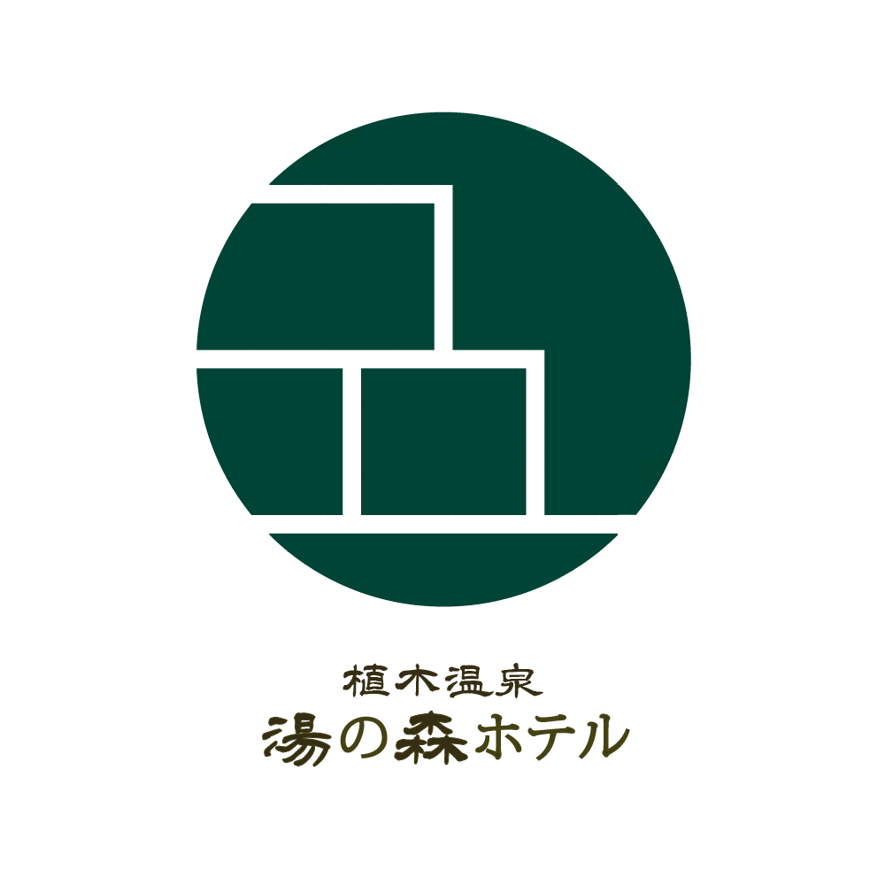
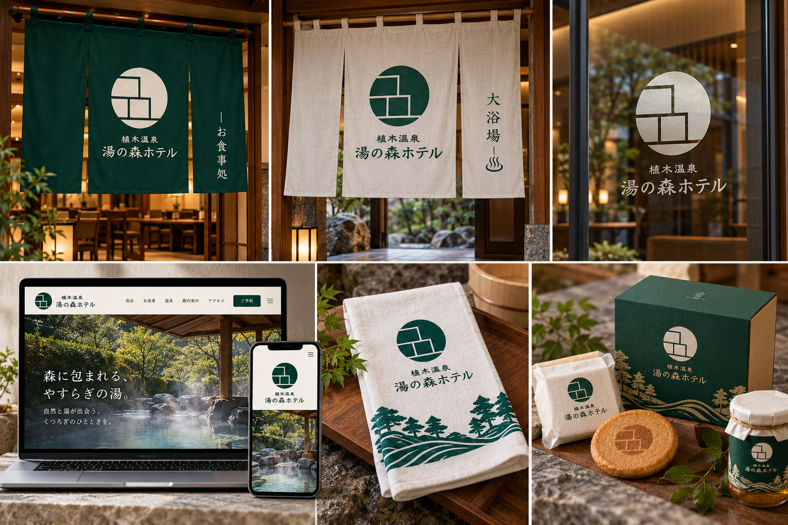

植木温泉 湯の森ホテル
- 制作内容
- ロゴデザイン、各種ツールへのブランド展開イメージ
- ご要望
- 「ゆ」の手描きの形を活かし、湯気の線は細く滑らかに。単色を基本に装飾を抑え、余白を活かした和モダンな印象にすること、ホテル名の書体は変えないことを大切にしました。
- デザインコンセプト
- 森と湯の静けさを、円形のエンブレムと段状の幾何学ラインで簡潔に表現。深緑背景の白抜きと、白地の濃色線画を比較し、深緑は森の静けさ、生成りや白は湯のやわらかさを感じる配色に整えました。
- ブランド展開
- ロゴの形と文字組み、色調を揃え、暖簾・ガラスサイン・Webサイト・手ぬぐい・土産品パッケージへ展開。複数の使用イメージを一枚のブランドコラージュにまとめました。Webのメインコピーは「森に包まれる、やすらぎの湯。」、サブコピーは「自然と湯が出会う、くつろぎのひとときを。」です。

